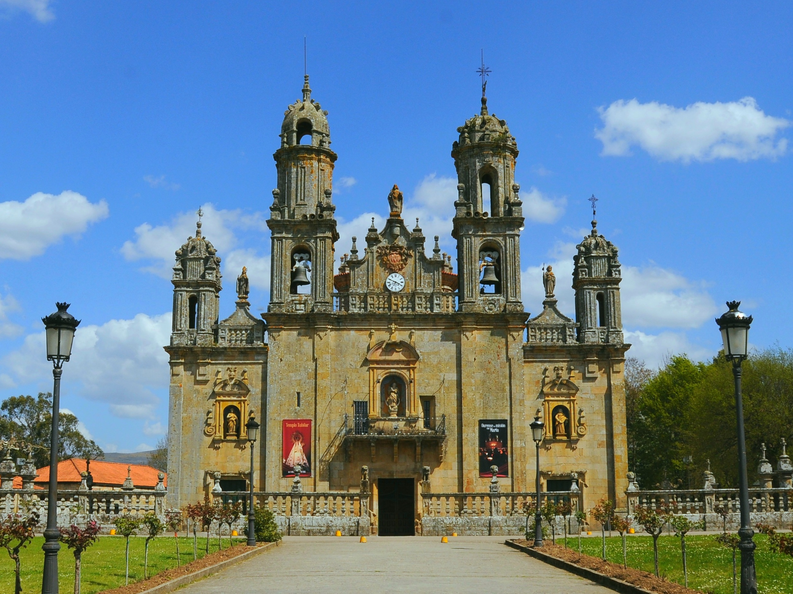

Faustino Míguez nació el 24 de marzo de 1831 en Xamirás, una pequeña localidad perteneciente a la parroquia de Acebedo del Río, en Celanova (provincia de Ourense, Galicia). Su nombre de bautismo fue Manuel Míguez González
Creció en el seno de una familia cristiana y trabajadora. De acuerdo con las fuentes históricas de la Santa Sede, en su hogar recibió una formación fundada en la oración, la devoción mariana, el trabajo responsable y la solidaridad sincera hacia las personas más vulnerables. Esta impronta familiar fue clave para definir su orientación religiosa y educativa posterior.
Ver Xamirás en Google MapsPrimeros contactos con la obra de Calasanz
Durante su juventud continuó sus estudios en Celanova, ambiente donde tomó contacto directo con la espiritualidad y pedagogía de San José de Calasanz, pionero de la educación gratuita para la infancia desfavorecida.
Su vocación sacerdotal y educativa terminó de consolidarse durante sus visitas y momentos de oración en el Santuario de Nuestra Señora de los Milagros, donde orientó definitivamente su vida al servicio de los jóvenes y los niños.
